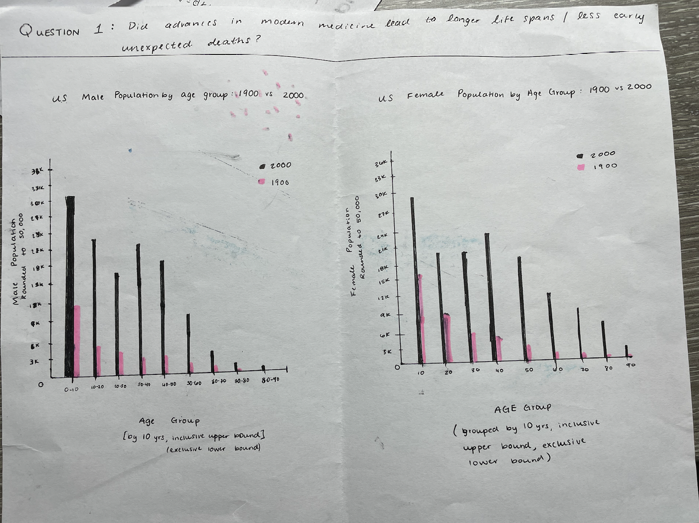
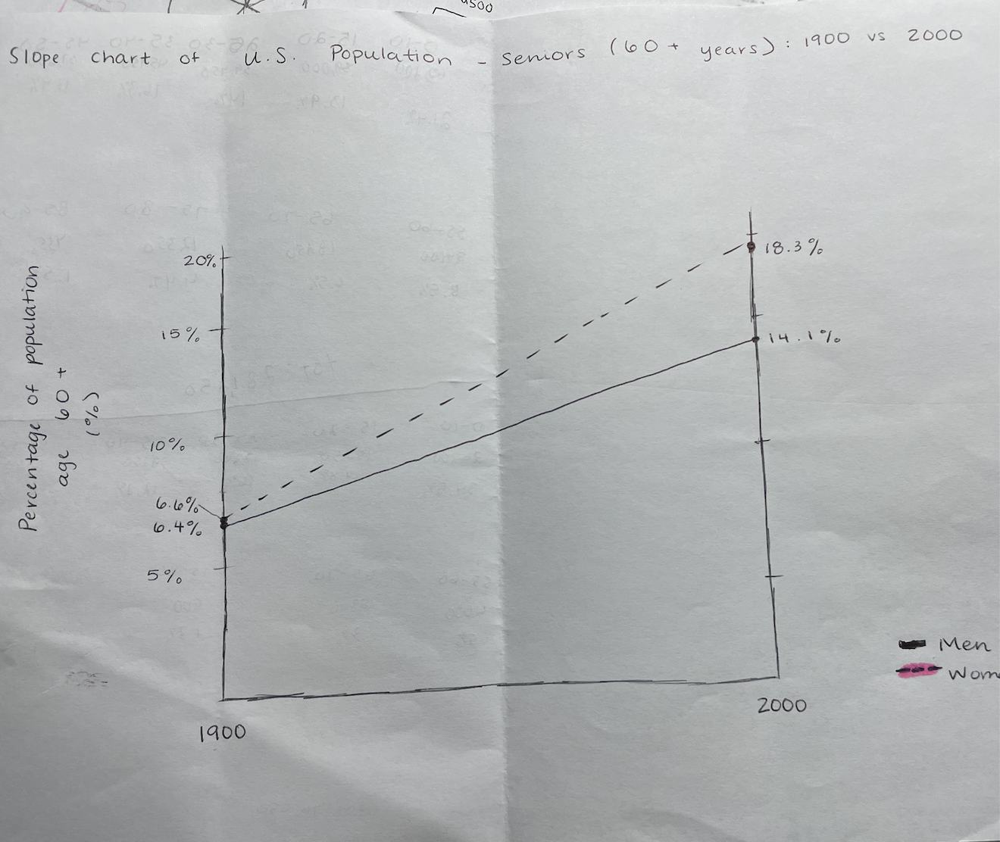
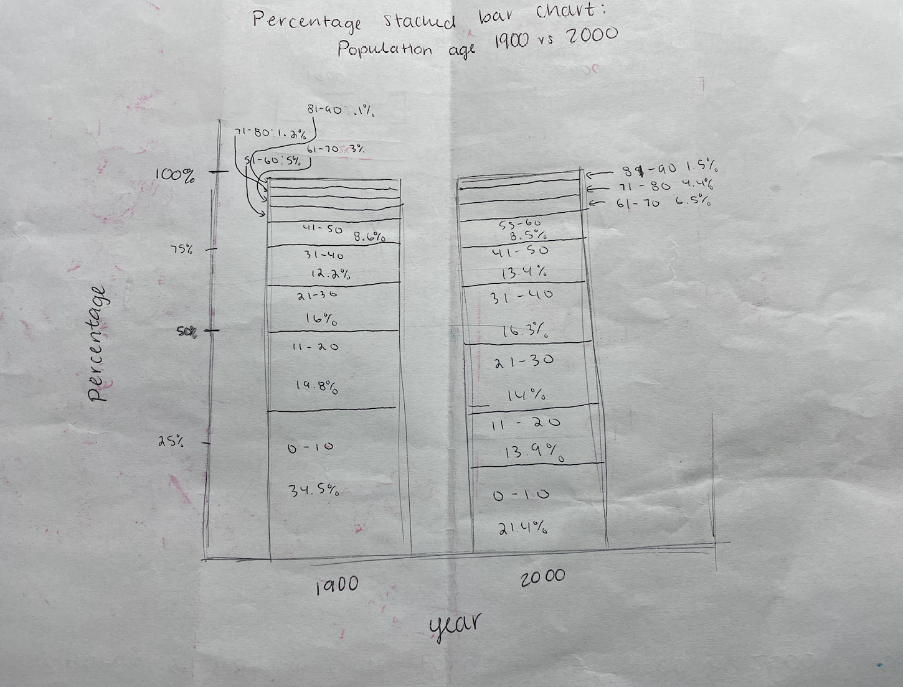

Question: Did advances in modern medicine lead to longer life spans/less early and preventable deaths?

Two bar graphs with one being focused on men and the one being women, separated by age and showing two bars are 1900 and 2000.
Design Rationale for Sketch 1:
My motivation for generating this sketch was to show that lives were getting longer in 2000 in comparison to 1900. I was not really sure what I was expecting to see, but I figured that since the data was groups categorized by their population, a bar chart would be a good idea.
I feel as if the data was well-conveyed in these bar graphs as it was quite easy to understand with the title, axes, and legends. However, I am not entirely sure that the question was properly answered with these graphs. I did not take into account the fact that population in general increased over the course of the century, so the difference between the 1900 and 2000 bars were more noticeable than the actual range of bars. I also had to combine age groups for categories in order to make the graph more readable, something I do think was accomplished, however this might have also not worked well for the sake of the bar graph. This design choice might have led to strange and statistically significant dips in population going overlooked.
In the next sketch, my goal is to better convey the increase in lifespan. I also think that after creating this graph, my question is changing to just see if lifespans have grown longer in the past century as there is not enough data about early and preventable deaths.

Slope chart for 60+ age group with left side being 1900 and right side being 2000, split up by gender.
Design Rationale for Sketch 2:
My motivation behind generating this sketch was to better see if there was an increase in lifespan as my previous sketch did not show this well. I realized I should probably be focusing on the elderly population as I am trying to show that there are more people that make it to 60 due to medicine. For that reason I wanted to show that both men and women are seeing longer lives in 2000. I was inspired by the readings on sketches and decided on a slope chart.
I think that this chart was fairly simple to understand which is always crucial when making charts. The slope graph does communicate the point that people are living longer lives as the elderly population more than doubles for both genders. In retrospect I think this was the best sketch to answer my original question. It shows the percentage of elderly rather than the number which I think helps in my previous problem of the population increase. Perhaps it would've been better to change the colors of the lines to show the difference in gender.
In the last sketch, I wanted to see the percentages of all the different age groups because I thought that this graph might be considered deceiving to readers as I could be 'hiding' a strange drop in percentage for a younger age.

Stacked percentage chart of total population separated by age groups in both 1900 and 2000.
Design Rationale for Sketch 3:
My motivation for creating this graph was to address both of the issues I faced in creating my first two graphs. For that reason, it shows the percentages of all age groups across both census years. I figured the most concise way to do this on paper that would still be understandable was a stacked percentage bar chart.
I think this was also very easy to understand. It shows the percentage distribution changing over the years quite well. It was difficult getting the proportions correct on paper which is why the sketch itself is probably incorrect. Especially for smaller percentages, it does look a bit messy which could affect the reader's understanding. Yet overall, I do think that this sketch answers the question very well. I attempted to use titling and axes to my advantage to be able to make this crowded graph simple.
For my final sketch, I think a modification of this graph or a combination somehow of this and the previous graph will best answer the question.
Reflection
WRITE REFLECTION ON ALL 3 SKETCHES HERE.
Phase Two: Final Design
ENTER IMAGE CAPTION HERE.
Design Process & Design Decisions
DESCRIBE YOUR DESIGN PROCESS AND DECISION DECISIONS HERE.